Can GPTs Evaluate Graphic Design Based on Design Principles?
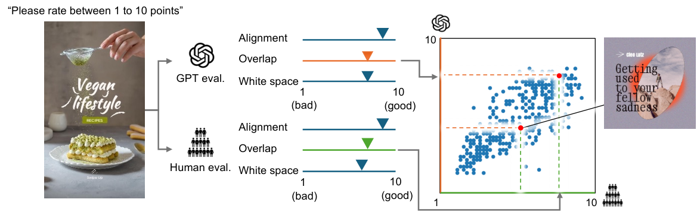
图 1：我们的研究概览。我们考察基于 GPT 的评估在平面设计上针对“对齐”“重叠”“留白”三项设计原则的能力。研究概览。
Recent advancements in foundation models show promising capability in graphic design generation. Several studies have started employing Large Multimodal Models (LMMs) to evaluate graphic designs, assuming that LMMs can properly assess their quality, but it is unclear if the evaluation is reliable. One way to evaluate the quality of graphic design is to assess whether the design adheres to fundamental graphic design principles, which are the designer’s common practice. In this paper, we compare the behavior of GPT-based evaluation and heuristic evaluation based on design principles using human annotations collected from 60 subjects. Our experiments reveal that, while GPTs cannot distinguish small details, they have a reasonably good correlation with human annotation and exhibit a similar tendency to heuristic metrics based on design principles, suggesting that they are indeed capable of assessing the quality of graphic design. Our dataset is available at https://cyberagentailab.github.io/Graphic-design-evaluation/.
Foundation models learn from a large-scale corpus and exhibit remarkable generalization capability across various tasks, and the same is true for graphic design tasks (Chen et al., 2024; Cheng et al., 2024; Jia et al., 2023; Inoue et al., 2024). While successful in certain graphic design tasks, it is still not apparent whether foundation models, such as GPT-4o, can reliably judge the quality of graphic design. Generally, high-quality graphic designs tend to follow design principles that are the designer’s common practices, such as alignment or repetition, as described in (Graham, 2002; Williams, 2014). While humans can judge whether a given design follows these principles, human evaluation is time-consuming and not scalable. One of the early attempts in automatic evaluation is (O’Donovan et al., 2014), which introduces hand-crafted metrics for optimization. Recent studies of graphic design generation have employed Large Multimodal Models (LMMs), particularly GPT-4 (Achiam et al., 2023), to directly estimate the quality. However, these studies do not consider the viewpoints of design principles for the evaluation.
基础模型从大规模语料中学习，并在各类任务上展现出卓越的泛化能力，平面设计任务亦不例外（Chen 等，2024；Cheng 等，2024；Jia 等，2023；Inoue 等，2024）。尽管在若干平面设计任务上取得成功，基础模型（如 GPT-4o）能否可靠地评判平面设计的质量，目前仍不明朗。一般而言，高质量的平面设计往往遵循设计原则——如对齐或重复——它们是设计师的通用做法，如（Graham, 2002；Williams, 2014）所述。人类固然可以判断某个设计是否遵循这些原则，但人工评估耗时且难以扩展。自动评估的早期尝试之一是（O’Donovan 等，2014），它引入了手工设计的指标用于优化。近期的平面设计生成研究则采用大型多模态模型（LMM），特别是 GPT-4（Achiam 等，2023），直接估计设计质量。然而，这些研究在评估时并未考虑设计原则的视角。
In this paper, we quantitatively study the behavior of GPTs with respect to human evaluators in assessing graphic designs, as illustrated in Figure 1. To investigate the performance of GPTs, we employ heuristic metrics as baseline. We compare these approaches across three representative design principles, alignment, overlap, and white space, by manipulating graphic designs. We curate a dataset of graphic banner designs from an online service and perturb original designs to artificially generate low-quality designs for evaluation. Then, we ask human subjects to rate those designs in terms of the design principles. This human rate annotation allows us to assess which method – heuristic evaluation or GPTs – better aligns with human evaluation. We also discuss the qualitative comparison of heuristic and GPT-based evaluation.
本文定量研究 GPT 在评估平面设计时相对人类评估者的行为，如图 1 所示。为考察 GPT 的性能，我们采用启发式指标作为基线。我们通过对平面设计施加扰动，在对齐、重叠与留白三项代表性设计原则上比较这些方法。我们从一个在线服务中整理出一批平面横幅设计，并对原始设计施加扰动，人为生成低质量设计用于评估。随后，我们请人类受试者依据设计原则对这些设计打分。借助这一人工评分标注，我们可以判断哪种方法——启发式评估还是 GPT——与人类评估更为吻合。我们还讨论了启发式评估与基于 GPT 的评估的定性比较。
We summarize our contributions in the following.
我们把贡献总结如下。
We empirically study the relationship between hand-crafted and GPT-based evaluation for graphic designs with respect to human evaluation.
• 我们以人工评估为参照，实证研究了手工设计指标与基于 GPT 的评估在平面设计上的关系。
We build a human-rated dataset of graphic designs that have varying degrees of quality to study the design quality.
• 我们构建了一个人工评分的平面设计数据集，其中包含不同质量程度的设计，用以研究设计质量。
We find a higher correlation between human annotation and GPTs than heuristic metrics, suggesting that GPTs can give reliable judgment for graphic design quality under certain conditions.
• 我们发现人工标注与 GPT 之间的相关性高于启发式指标，这表明在一定条件下，GPT 能够对平面设计质量给出可靠的判断。
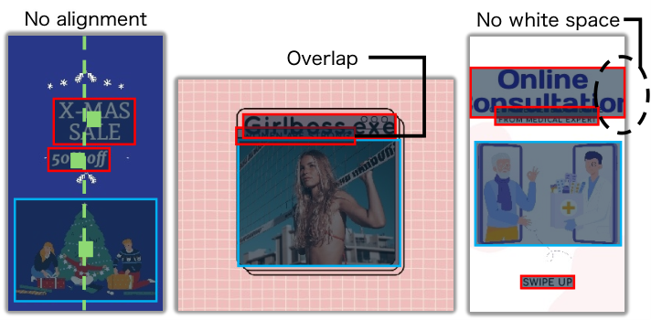
图 2：三项设计原则的反面示例。这是一幅图。
Graphic design principles are the designer’s common practices to create aesthetic work (Graham, 2002; Williams, 2014). In this paper, we employ representative design principles used in several studies of graphic design generation (O’Donovan et al., 2014; Kong et al., 2022): alignment, overlap, and white space. Alignment and overlap are commonly used in evaluation for layout generation, such as (Li et al., 2020). White space is also a critical factor in graphic design generation approaches (Kong et al., 2022). We follow three design principles based on (O’Donovan et al., 2014). Below, we briefly describe each principle.
平面设计原则是设计师为创作美观作品而遵循的通用做法（Graham, 2002；Williams, 2014）。本文采用平面设计生成若干研究中所使用的代表性设计原则（O’Donovan 等，2014；Kong 等，2022）：对齐、重叠与留白。对齐与重叠常用于布局生成的评估，如（Li 等，2020）；留白也是平面设计生成方法中的关键因素（Kong 等，2022）。我们沿用（O’Donovan 等，2014）中基于的三项设计原则。下面简要描述各项原则。
We consider the arrangement of elements such that their edges line up along common rows or columns to express a sense of order and structure.
我们考虑元素的排布，使其边缘沿公共的行或列对齐，以表达秩序感与结构感。
Alignment along with the horizontal and vertical direction is considered.
(1) 考虑水平与垂直方向上的对齐。
The elements that align at a glance but slight misalignment are penalized because it is visually displeasing.
(2) 乍看对齐、实则存在细微错位的元素会被扣分，因为这在视觉上令人不适。
Larger alignment groups (i.e., aligned elements distant from each other) are preferred as they produce simpler designs with more unity between elements.
(3) 更大的对齐组（即彼此相距较远但仍对齐的元素）更受偏好，因为它们产生更简洁的设计，元素之间也更具整体性。
Inappropriate overlap reduces readability. We consider the following aspects.
不当的重叠会降低可读性。我们考虑以下几个方面。
The three types of overlap, the overlap of elements on text, the overlap of text on graphics, and the overlap of graphics on other graphics, are considered.
(1) 考虑三类重叠：元素压在文字上、文字压在图形上，以及图形压在其他图形上。
Hard-to-read text because of insufficient color contrast between a text and the background color is penalized.
(2) 文字与背景色之间色彩对比不足而难以辨认的，会被扣分。
The graphic design that includes elements extending past the boundaries is also penalized.
(3) 含有超出边界的元素的平面设计同样会被扣分。
White space is for the appropriate amount of space in a design for better readability.
留白指设计中留有适量空白，以提升可读性。
A large ratio of white space that is not covered by design elements (e.g., graphics and tests) is preferred.
(1) 未被设计元素（如图形与文字）覆盖的留白占比较大时更受偏好。
However, the graphic design with a too large region of empty white space on the image is undesirable.
(2) 但图像上存在过大空旷留白区域的平面设计则不可取。
The greater distance between each element is preferred.
(3) 各元素之间的距离更大时更受偏好。
Uniformed vertical spacing of each text element is preferred.
(4) 各文字元素垂直间距均匀时更受偏好。
Wider border margins (i.e., the white space at the edges of the image) for each element are preferred.
(5) 各元素更宽的边框留白（即图像边缘处的留白）更受偏好。
For better understanding, we show some visually unappealing examples because they violate the principles in Figure 2.
为便于理解，我们在图 2 中展示了一些因违反上述原则而在视觉上不具美感的示例。
In this paper, we compare the evaluation metrics of the heuristic approach and the GPT-based approach. In both approaches, we input a graphic design and then obtain the score of the input. We set the lower and upper bounds for both metrics, where the higher values indicate better quality.
本文比较启发式方法与基于 GPT 的方法两类评估指标。两种方法都以一个平面设计为输入，输出该输入的分值；我们为两类指标都设定了上下界，数值越高表示质量越好。
We employ the hand-crafted formulation in (O’Donovan et al., 2014) as heuristic evaluation metrics, which were originally designed for graphic design optimization. We adopt the formulas related to the alignment, overlap, and white space as evaluation metrics. These metrics directly consider the size and coordinates of text or other graphic elements. We normalize the metric range from 0 to 1.
我们采用（O’Donovan 等，2014）中的手工设计公式作为启发式评估指标，这些公式最初是为平面设计优化而设计的。我们选取与对齐、重叠、留白相关的公式作为评估指标；这些指标直接考虑文字或其他图形元素的尺寸与坐标，并把指标范围归一化到 0 至 1。
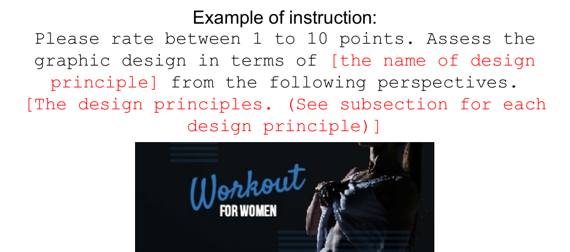
图 3：由 GPT 与人类为平面设计打分的方式。GPT 的详细输入提示词见附录。标注示例。
We give prompts to GPT-4o 11 1 https://openai.com/index/hello-gpt-4o/ and ask for scores in terms of alignment, overlap, and white space. We made the prompt based on explanations of design principles and formulas described in (O’Donovan et al., 2014). See the Appendix for more details. We render and rasterize the original design to create an input prompt. We show an example in Figure 3, where GPT-4o gives scores from 1 to 10 to the input based on a specific aspect.
我们向 GPT-4o（https://openai.com/index/hello-gpt-4o/）给出提示词，并要求其就对齐、重叠与留白三个方面打分。我们依据（O’Donovan 等，2014）中对设计原则的说明与公式来构造提示词，更多细节见附录。我们把原始设计渲染并栅格化，以生成输入提示词。图 3 给出了一个示例：GPT-4o 针对某一特定方面为输入给出 1 到 10 的分数。
We collect graphic design templates from VistaCreate 22 2 https://create.vista.com, which hosts a large number of banner or poster designs. The templates contain coordinate and size information for graphic and text elements within a design. We randomly sampled one hundred templates from VistaCreate and perturbed coordinate and size parameters to create aesthetically inferior samples. We apply two kinds of perturbations in our experiments: -coordinate and font size. We perturb the -coordinate of the text position to evaluate alignment and the font size of text elements to evaluate overlap and white space. We give three ranges of perturbation, small, medium, and large, to investigate the sensitivity of metrics. We combined the 100 original samples and 600 perturbed samples to build a dataset of 700 samples.
我们从 VistaCreate（https://create.vista.com）收集平面设计模板，该平台托管了大量横幅或海报设计。这些模板包含一个设计中图形与文字元素的坐标与尺寸信息。我们从 VistaCreate 随机采样一百个模板，并对坐标与尺寸参数施加扰动，以生成美观度较差的样本。实验中我们施加两类扰动： 坐标与字号。我们扰动文字位置的 坐标以评估对齐，扰动文字元素的字号以评估重叠与留白。我们设置小、中、大三档扰动幅度，以考察各指标的敏感性。我们把 100 个原始样本与 600 个扰动样本合并，构建出一个含 700 个样本的数据集。
For each design, we collect human scores for alignment, overlap, and white space. We recruited 60 participants via crowdsourcing and collected five annotations per graphic design, where we asked participants for scores in the 1 to 10 range, as shown in Figure 3. We use the average score of five annotations in our experiments.
对每个设计，我们收集人工在对齐、重叠与留白上的评分。我们通过众包招募了 60 名参与者，为每个平面设计收集五条标注，要求参与者在 1 到 10 的范围内打分，如图 3 所示。实验中使用五条标注的平均分。
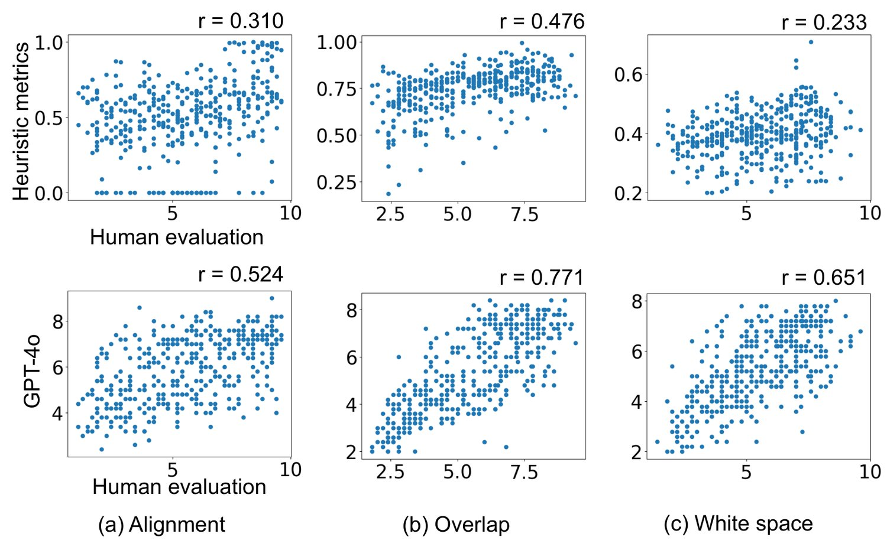
图 4：人工标注与启发式分数或 GPT 分数之间的相关性。 为皮尔逊相关系数。这是一幅图。
Setup For a fair comparison with human evaluation and detailed analyses, we conduct the GPT-based evaluation five times and use the average score for the GPT score. We set a sampling temperature, which controls the randomness of the GPT, to 1 (default value). Higher temperature (e.g., 0.9) shows more diverse output. Therefore, our experimental setting takes the diversity into account.
设置 为与人工评估作公平比较并开展细致分析，我们进行五次基于 GPT 的评估，并取其平均分作为 GPT 分数。我们把控制 GPT 随机性的采样温度设为 1（默认值）；更高的温度（如 0.9）会产生更多样的输出，因此我们的实验设置已把多样性纳入考虑。
Correlation to human evaluation To analyze the correlation between human annotation and the scores by automatic evaluation, we prepare two types of scatter plots of evaluation scores: one comparing heuristic metrics with human evaluation and the other comparing GPT-4o with human evaluation for each design principle, as shown in Figure 4. Interestingly, GPT-4o shows a better correlation with human evaluation than heuristic metrics. This may be because heuristic metrics are designed to optimize a graphic design by comparing the graphic design before and after optimization but not for comparing two totally different designs.
与人类评估的相关性 为分析人工标注与自动评估分数之间的相关性，我们准备了两类评估分数的散点图：一类比较启发式指标与人工评估，另一类比较 GPT-4o 与人工评估，按设计原则分别绘制，如图 4 所示。有意思的是，GPT-4o 与人工评估的相关性优于启发式指标。这可能是因为启发式指标是为通过比较优化前后的平面设计来优化设计而设计的，而非用于比较两个完全不同的设计。
We show an example of completely different graphic designs and their scores in Figure 5. According to the heuristic metrics, the order of better design is (a), (b), and (c). However, the order according to GPT-4o and human evaluation is (a), (c) (or (a) equal (c)), and (b). The heuristic evaluation quite degrades the score between (a) and (c) despite the fact that both graphic designs are created by human designers. On the other hand, GPT-4o and human evaluation are not much different. The results suggest that GPT-4o could be a suitable approach for quality evaluation for recent LMM-based generators since they generate significantly different designs by altering sampling parameters (or random seeds).
我们在图 5 中给出一个完全不同的平面设计示例及其分数。依据启发式指标，设计优劣顺序为 (a)、(b)、(c)；而依据 GPT-4o 与人工评估，顺序则为 (a)、(c)（或 (a) 与 (c) 相当）、(b)。尽管 (a) 与 (c) 两个平面设计都由人类设计师创作，启发式评估却在两者之间给出了相当大的分数落差；相比之下，GPT-4o 与人工评估的差别不大。这一结果表明，对于近期基于 LMM 的生成器，GPT-4o 可能是一种合适的质量评估方法，因为这类生成器会通过改变采样参数（或随机种子）生成差异显著的设计。
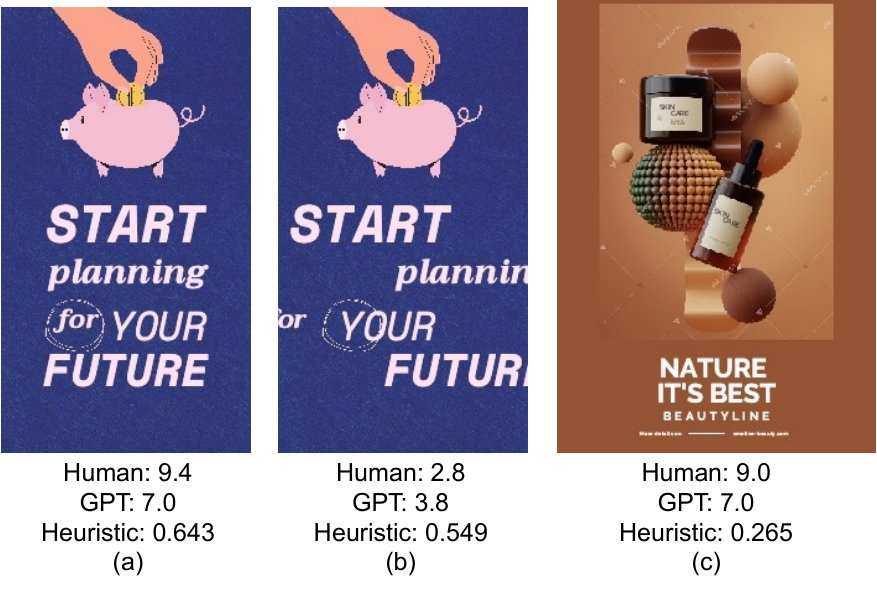
图 5：平面设计及其对齐分数。这是一幅图。
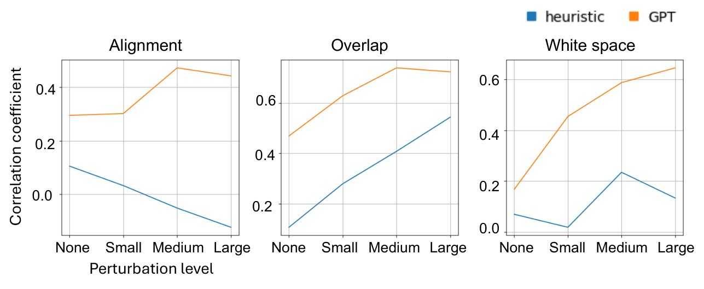
图 6：人工评估与各方法所得分数之间的相关系数。这是一幅图。
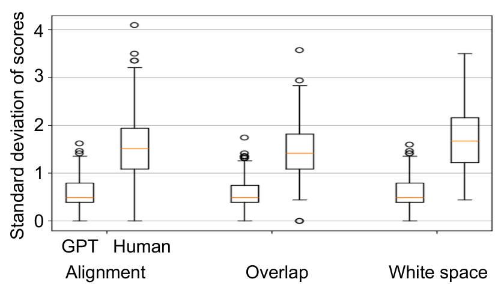
图 7：分数标准差的箱线图。这是一幅图。
Sensitivity We investigate whether GPT-based evaluation is effective across designs of diverse qualities by calculating the correlation coefficients for each perturbation level, as shown in Figure 6. GPT scores exhibit a stronger correlation with human annotation compared to heuristic scores across all metrics and perturbation levels. Additionally, the correlation of GPT scores tends to increase as perturbation levels rise. This implies that when perturbations are significant, such as in the case of a graphic design with a noticeably poor appearance, achieving a stable evaluation becomes easier and more efficient than humans.
敏感性 我们通过计算各扰动水平下的相关系数，考察基于 GPT 的评估在质量各异的设计上是否有效，结果如图 6 所示。在所有指标与所有扰动水平上，GPT 分数与人工标注的相关性都强于启发式分数。此外，GPT 分数的相关性随扰动水平升高而趋于增强。这意味着当扰动显著时（例如平面设计外观明显欠佳），获得稳定的评估比人类更容易、也更高效。
Reliability We investigate how stable the GPT scores are since running GPT multiple times may give different scores. We show the standard deviation of the GPT scores and human annotation in Figure 7. The standard deviation of GPT scores is lower than that of the human evaluation scores. This result suggests that GPT scores with a single run for each principle are practical and cost-effective evaluation metrics.
可靠性 由于多次运行 GPT 可能给出不同分数，我们考察了 GPT 分数的稳定程度。图 7 给出了 GPT 分数与人工标注的标准差。GPT 分数的标准差低于人工评估分数的标准差。这一结果说明，对每项原则只运行一次的 GPT 分数，是实用且高性价比的评估指标。
We show typical cases where GPT-based evaluation succeeds while heuristic evaluation fails and vice versa. We show cases where only GPT-based evaluation succeeds in Figure 8. The design includes objects in the background, but heuristic evaluation considers the background as white space. Heuristic evaluation is difficult when assessing graphic designs that include an object embedded in the background.
我们展示了基于 GPT 的评估成功而启发式评估失败的典型案例，反之亦然。图 8 给出了只有基于 GPT 的评估成功的案例：设计中背景包含物体，而启发式评估把背景当作留白。当评估背景中嵌有物体的平面设计时，启发式评估难以奏效。
We also show cases where only heuristic evaluation succeeds in Figure 9. Since heuristic metrics are vector-based, they can capture slight differences in the design directly from the vector values. However, GPT-based evaluation struggles to detect such differences accurately. A similar limitation of GPT has also been reported in another study (You et al., 2023).
图 9 给出了只有启发式评估成功的案例。由于启发式指标基于矢量，它们能直接从矢量值中捕捉设计中的细微差异；而基于 GPT 的评估难以准确察觉这类差异。另一项研究也报道了 GPT 的类似局限（You 等，2023）。
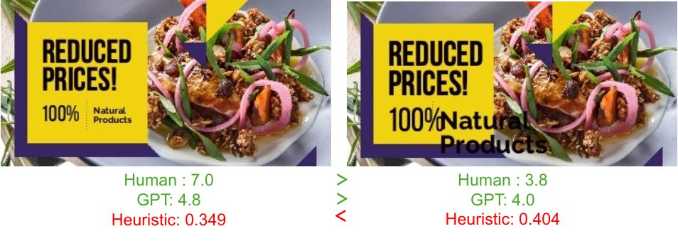
图 8：GPT 对留白作出正确评估的样本。这是一幅图。
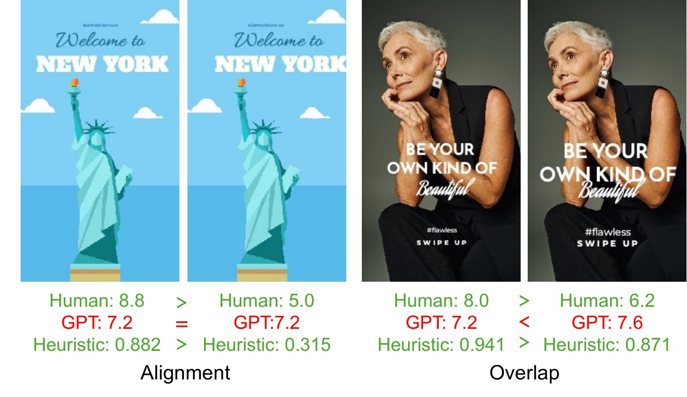
图 9：启发式评估正确评估的样本示例。这是一幅图。
In this paper, we investigated the appropriateness of using heuristic evaluation metrics and GPT-4o for evaluating graphic designs focusing on design principles. To achieve this, we collected the large-scale human annotation and analyzed the correlation between the annotation and each evaluation metric. Our experiment showed that GPT-based evaluation better correlates with human annotation.
本文以设计原则为着眼点，考察了使用启发式评估指标与 GPT-4o 评估平面设计的恰当性。为此，我们采集了大规模人工标注，并分析了标注与各评估指标之间的相关性。实验表明，基于 GPT 的评估与人工标注的相关性更好。
For future work, we will jointly evaluate several design principles to assess the overall goodness of graphic designs. Additionally, we plan to evaluate graphic designs beyond design principles, such as font choices.
未来工作中，我们将联合评估若干设计原则，以评判平面设计的整体优劣；此外，我们计划评估设计原则之外的方面，例如字体选择。
We summarize the design principles used in our experiments. These design principles are based on (O’Donovan et al., 2014).
我们总结实验中使用的设计原则，这些设计原则基于（O’Donovan 等，2014）。
This metric assesses the alignment of graphic and text elements and consists of three major components. First, it assesses whether there is alignment between neighboring elements. Second, it evaluates the alignment error between elements intended to be precisely aligned within a neighborhood. If the elements appear to be aligned but exhibit slight misalignment, the evaluation is based on the degree of this misalignment. Third, the metric considers alignment among distant elements. If the elements between two separated elements are aligned with these two elements, both distant elements are also considered aligned and are evaluated accordingly.
该指标评估图形与文字元素的对齐情况，由三个主要部分构成。其一，评估相邻元素之间是否存在对齐；其二，评估邻域内本应精确对齐的元素之间的对齐误差——若元素看似对齐但存在细微错位，则依据错位的程度进行评估；其三，该指标考虑相距较远的元素之间的对齐：若两个分离元素之间的元素都与这两个元素对齐，则这两个相距较远的元素也视为对齐，并据此评估。
We transcribe the alignment principle to the prompt below.
我们把对齐原则转写为如下提示词。
This metric primarily assesses the overlap of graphic and text elements within the background. It consists of three major components. First, it measures the color change between the target area before and after rendering texts, considering whether the text is rendered against a background of the different color. Second, it calculates the percentage of overlap for each element, accounting for overlaps not only between text elements but also between text and graphics. Third, it assesses the percentage of the elements’ area that extends beyond the canvas, measuring the extent to which text and other elements are appropriately contained within the background.
该指标主要评估背景中图形与文字元素的重叠情况，由三个主要部分构成。其一，度量渲染文字前后目标区域的颜色变化，考察文字是否被渲染在不同颜色的背景之上；其二，计算每个元素的重叠百分比，不仅计入文字元素之间的重叠，也计入文字与图形之间的重叠；其三，评估元素面积超出画布的百分比，度量文字与其他元素被恰当容纳在背景中的程度。
We transcribe the overlap principle to the prompt below.
我们把重叠原则转写为如下提示词。
This metric evaluates the appropriate amount of white space in a design and consists of five main components. First, it measures the percentage of white space in the image, determined by the proportion except for graphic and text elements relative to the overall image area. Generally, a larger amount of natural white space is considered better. Second, it includes a metric that penalizes designs where certain parts of the image have excessively large areas of white space. In contrast to the first component, this metric helps ensure a balanced distribution of white space by penalizing areas with unnatural white space. Third, the metric evaluates white space based on the distance between each element. This component considers the spacing between elements as a measure of white space adequacy. Fourth, it assesses the variance in the distance between text elements. Consistent spacing between texts is considered aesthetically pleasing and indicates uniform white space. Finally, the metric evaluates the white space at the edges of the image (i.e., border margin). An image lacking adequate white space at the edges is considered aesthetically poor.
该指标评估设计中留白的适量程度，由五个主要部分构成。其一，度量图像中留白的百分比，由除图形与文字元素之外的部分相对整个图像面积的比例确定；一般而言，自然留白的量越大越好。其二，包含一个惩罚项，针对图像中某些部分存在过大留白区域的设计；与第一部分相反，该指标通过对不自然的留白区域加以惩罚，帮助确保留白分布均衡。其三，该指标依据各元素之间的距离评估留白，把元素间距作为留白是否充足的度量。其四，评估文字元素之间距离的方差：文字间距一致被认为更具美感，也意味着留白均匀。最后，该指标评估图像边缘处的留白（即边框留白）；边缘缺少足够留白的图像被认为美观度较差。
We transcribe the white space principle to the prompt below.
我们把留白原则转写为如下提示词。
We create the prompt based on design principles described in (O’Donovan et al., 2014). Note that our prompts include a part of the prompt used in (Jia et al., 2023). In Section C, we also conduct a pairwise evaluation that directly compares two graphic designs and determines the superior one. Therefore, we describe the prompt for the absolute and pairwise evaluation here.
我们依据（O’Donovan 等，2014）所述的设计原则构造提示词。需要说明的是，我们的提示词包含了（Jia 等，2023）所用提示词的一部分。在第 C 节中，我们还开展了一项直接比较两个平面设计并判定孰优的成对评估，因此这里分别给出绝对评估与成对评估的提示词。
The prompt of absolute evaluation
绝对评估的提示词
Here, [A design principle] indicates the prompt described in Section A, [image] indicates placeholder of the input image.
其中，[A design principle] 表示第 A 节所述的提示词，[image] 表示输入图像的占位符。
The prompt of pairwise evaluation
成对评估的提示词
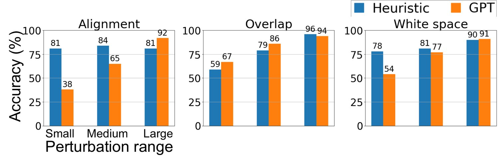
图 10：成对评估的对比。这是一幅图。
We also conduct the pairwise evaluation, which directly assesses which graphic design is better, inputting two images. Two graphic designs are input to GPT-4o, and then GPT-4o answers which graphic design is better from the perspective of a specific design principle. The choices are not limited to “yes” and “no” but also include “not sure.” Each pair is evaluated five times, and the final result is determined by voting. We also conduct a similar evaluation task for humans to obtain the annotation.
我们还开展了成对评估：输入两幅图像，直接判定哪一个平面设计更好。我们把两个平面设计输入 GPT-4o，由 GPT-4o 从特定设计原则的角度回答哪个平面设计更好。选项不限于“是”与“否”，还包括“不确定”。每一对评估五次，最终结果由投票决定。我们也对人类开展了一项类似的评估任务以获取标注。
We compare pairwise evaluation by GPT-4o with the heuristic evaluation. In heuristic evaluation, we compare the scores of before and after perturbation and determine the better one.
我们把 GPT-4o 的成对评估与启发式评估作比较。在启发式评估中，我们比较扰动前后的分数并判定孰优。
Figure 10 presents the pairwise evaluation results for each design principle. Across all metrics, the accuracy of GPT-4o increases progressively with the range of perturbation. For medium and large perturbations, GPT-4o performance is comparable to that of heuristic metrics, indicating that GPT-4o can distinguish between significantly poorer designs and others. However, GPT-4o performs worse than heuristic metrics for small perturbations in alignment and white space. There are two reasons for this. First, heuristic evaluation metrics are used to compare the two graphic designs before and after optimization. This is similar to the comparison of before and after perturbation designs. Second, as shown in the absolute evaluation, GPT-4o struggles to capture subtle differences in detailed design.
图 10 给出了各项设计原则上的成对评估结果。在所有指标上，GPT-4o 的准确率随扰动幅度增大而逐步提高；在中等与大扰动下，GPT-4o 的性能与启发式指标相当，说明 GPT-4o 能够区分明显较差的设计与其他设计。然而在对齐与留白的小扰动下，GPT-4o 的表现不如启发式指标。这有两个原因：其一，启发式评估指标用于比较两个优化前后的平面设计，这与比较扰动前后的设计类似；其二，如绝对评估所示，GPT-4o 难以捕捉细致设计中的微妙差异。
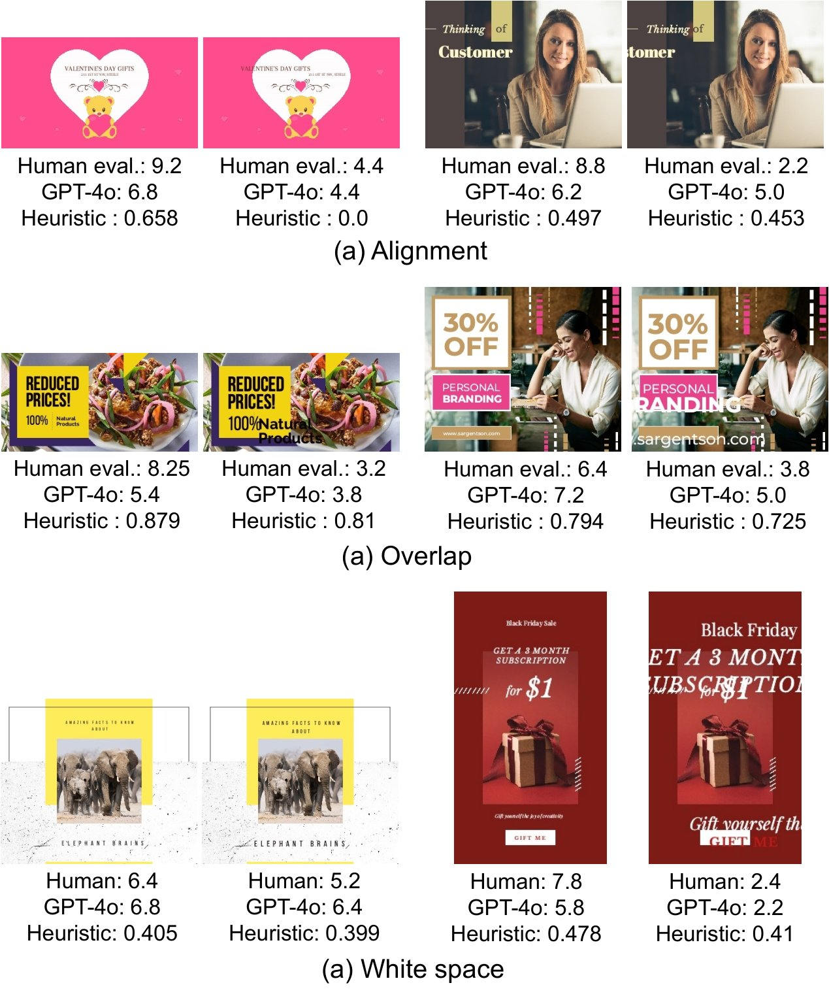
图 11：评估分数示例。这是一幅图。
We show the examples of evaluation scores in Figure 11. From these examples, GPT-4o scores are more similar to those of a heuristic evaluation. In contrast, heuristic evaluation can be used to compare the before and after perturbation; however, comparing the different graphic designs is difficult, as described in Section 5.1.
我们在图 11 中展示了评估分数的示例。从这些示例可见，GPT-4o 的分数更接近启发式评估的分数。相反，启发式评估可用于比较扰动前后的结果，但如第 5.1 节所述，比较不同的平面设计则较为困难。